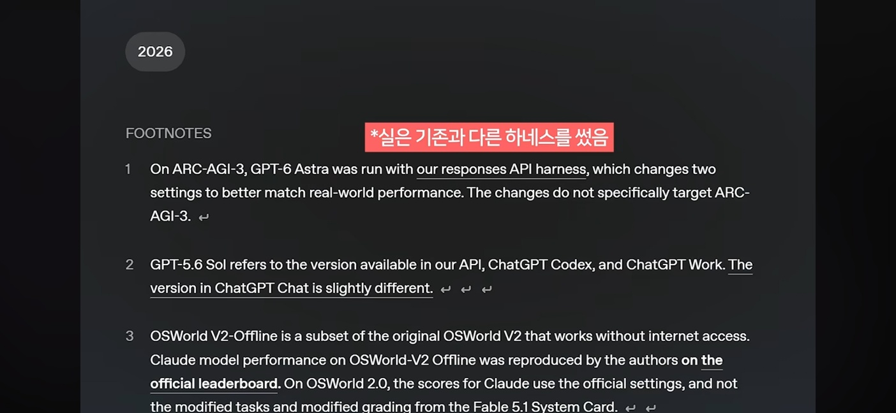

예시 · 알림 보내기 단계
테스트 상황
업로드 실패
실패 상황을 넣어 확인
기대한 알림
“업로드 실패”
실패했다는 사실을 알려야 함
실제 알림
“업로드 성공”
기대한 결과와 다름
수정 요청
성공·실패 알림 분기를 확인하고,
두 경우를 다시 테스트하세요.
명령 하나와 요구사항으로 시작하는 맞춤 자동화
30분 · 한국어 · 데모는 시뮬레이션
Speaker
차량제어서비스개발팀
n8n을 쓰는 곳: 팀 배포 캘린더 · ITOM EOS 현황 리포트 · Jira due date 납기 · 배포 후 시뮬레이터 E2E 자동화 리포트 (공용 PC에서 24시간 자동 실행)

Agenda
01 · 문제 · 만드는 과정의 부담
어떤 노드를 쓸까?
어떻게 이어야 할까?
무엇을 고쳐야 할까?
제대로 동작할까?
이번에는 왜 안 될까?
이제 계속 돌려도 될까?
자동화하려고 시작했는데,
만드는 과정부터 부담이 됩니다.
결국 시간을 들이기보다, 익숙한 수작업으로 돌아가게 됩니다.
01 · 문제
요구사항을 다르게 이해한 채, 워크플로우가 바로 바뀐다.
01 · 문제
확인 없이 즉시 변경. 내가 말한 것과 다른 워크플로우가 된다.
기억·학습 데이터 기반이라 오래된 노드 파라미터 / typeVersion 사용.
UI에서 손으로 고치면 실수를 바로 알기 어렵다.
무엇을, 왜 바꿨는지 남지 않는다.
「설치 어떻게 했더라」가 매번 반복. 개인 PC 절대 경로가 박힌 스크립트.
01 · 문제 · 반복되면 남는 결과
편해지려고 자동화했는데,
오히려 관리할 일만 더 늘어났습니다.
설정·수정·점검까지, 결국 만든 사람이 계속 챙겨야 합니다.
02 · 이 킷을 만들며 세운 나의 원칙
시작부터 지치지 않도록
노드 사용법과 연결을 직접 익히지 않아도
만든 사람이 아니어도 이해하고 고칠 수 있도록
이 원칙을 담은 진입점이
Claude 대화창 하나였습니다.
02 · 해결 아이디어 · 요청은 대화로, 실행은 절차로
/n8n-automation:n8n-workflow-manager. 매일 아침 배포 캘린더를 갱신하고 팀 채널에 알려줘.
먼저, 파일을 읽습니다
워크플로우와 스크립트 확인
어떤 데이터가 어디로 흐를까?
언제 실행할까요?
매일 08:00 KST + 수동 실행
어디로 알려드릴까요?
Teams에 점검 건수와 업로드 결과
실패하면 어떻게 할까요?
오류를 알리고, 실패로 종료
이렇게 이해했어요. 맞나요?
매일 08:00 · Teams 알림 · 실패 시 오류 보고
✓ 네, 맞습니다
요건 확인 완료
공식 문서에서 근거를 찾습니다
실행 시각 · 환경 제약
기존 구현과 비교합니다
설정 조건과 검증 기준 정리
구성 → 연결 → 검증
_workspace_n8n/에 실행 계획을 남깁니다
✓ 이 계획으로 진행해 주세요
사람이 승인한 뒤 실행
✓ 필수 데이터와 실패 분기까지 확인
_workspace_n8n/에 작업 기록을 남깁니다
분석 · 요건 · 계획 · 실행·검증 결과
기록을 읽고, 사람도 다음 대화의 AI도 이어서 수정합니다
_workspace_n8n/에 남긴 맥락을 바탕으로, 같은 대화에서
플러그인 설치 및 환경·연결 설정 후 이용
과정 시뮬레이션 · /n8n-automation:n8n-workflow-manager
“매일 아침 배포 캘린더를 갱신하고 팀 채널에 알려줘.”
JSON·스크립트에서 입력 → 변환 → 출력 구조 확인
매일 08:00 KST · Teams 알림 · 오류 알림 후 실패 종료
요건 전체를 요약하고 사용자 응답으로 확정
공식 문서와 기존 구현에서 실행 조건·검증 기준 확인
구성 → 연결 → 검증 계획을 파일로 남기고 승인
노드 연결 후 구조·필수 데이터·실패 분기 검증
_workspace_n8n/에 작업 기록을 남기고, 사람도 다음 대화의 AI도 이어서 수정
플러그인 설치 및 환경·연결 설정 후 이용 · 예시 장면이며 실제 실행 기록이 아닙니다.
02 · 해결 아이디어
이해한 내용을 요약해 매번 재확인한다. 모호한 부분만 묻는 게 아니라, 확인이 끝나야 다음 단계로 간다.
todo 목록을 파일로 남기고, 실행 전에 다시 한번 승인을 받는다.
둘 다 Claude Code 내장 도구 AskUserQuestion으로 구현 — 선택지를 제시하고 답을 받아야 진행된다.
03 · 어떻게 사고하나 · n8n 적용 설계
분석 → 계획 → 구현 → 검증
독립 자료 조사만 동시에 수행
만드는 역할과 판정하는 역할 분리
에이전트 수는 작업의 관계를 그린 뒤 결정합니다.
11~17장은 배포 캘린더에 적용한 설계이며, 화면의 파일명·역할 정의는 예시입니다
03 · 어떻게 사고하나 · n8n 적용 설계
03 · 어떻게 사고하나 · n8n 적용 설계
04 · 어떻게 검증하나 · n8n 적용 설계
통과 · 실패 · 미검증 을 근거와 함께↺ 실패 → 오류 보고서 → 빌더 수정 → 재검증 (최대 2회)
차이는 계획이 아니라, 승인 뒤 누가 무엇으로 완료를 판정하느냐입니다.
Plan 모드는 Claude Code 기본 흐름 기준 · 별도 검증자는 적용 설계(현재 킷은 빌더가 validate 도구로 검사)
04 · 어떻게 검증하나 · n8n 적용 설계
{
"status": "success",
"server": "api-01"
// errorCount 없음
}// 빈칸을 0건으로 채우지 않는다
const errorCount = $json.errorCount ?? null;
const status = errorCount === null ? 'failed' : 'success';
const message = errorCount === null
? '오류 건수 확인 못 함' : `오류 ${errorCount}건`;null로 두고 “오류 건수 확인 못 함”으로 failed모르는 값을 0건으로 채우지 않습니다. “오류 없음”과 “확인 못 함”은 다릅니다.
쉬운 설명용 가상 예시 · 실제 배포 캘린더 파이프라인도 빠진 점검 건수는 0건이 아닌 실패로 처리 · 비교는 같은 n8n-mcp 도구(validate · autofix · test) 기준
04 · 어떻게 검증하나 · n8n 적용 설계
예시 · 알림 보내기 단계
테스트 상황
실패 상황을 넣어 확인
기대한 알림
실패했다는 사실을 알려야 함
실제 알림
기대한 결과와 다름
성공·실패 알림 분기를 확인하고,
두 경우를 다시 테스트하세요.
04 · 어떻게 검증하나 · n8n 적용 설계
생성 → 검증 → 부분 수정
대상: 워크플로우와 연결 데이터
종료: 완료 조건 충족 또는 수정 상한
실패 패턴 → 규칙·검사 개선 → 비교
대상: 스킬 · 역할 정의 · 검증 스크립트
반복 작성한 검사는 실행 가능한 코드로 묶기
더 길어진 지시문보다 더 잘 구별하는 검사와 줄어든 재작업을 확인합니다.
비교 설계 예시 · 새 스킬은 스킬 없이, 개선 스킬은 수정 전 버전과 비교
05 · 설치와 업데이트 · 팀이 함께 쓰는 진입점
「설치해도 새 버전 나올 때마다 zip 파일 풀어서 다시 넣어야 하는 거 아니야?」
① 마켓플레이스 등록 — 플러그인 목록 추가
/plugin marketplace add https://gitlab.hmc.co.kr/infoccs/service/dkc/automation/n8n-automation.git
② 플러그인 설치 — n8n-automation 선택
/plugin install n8n-automation@n8n-automation
③ 자동 업데이트 켜기 — 한 번만
/plugin → Marketplaces → n8n-automation 선택 → Enable auto-update팀 GitLab 같은 서드파티 마켓플레이스는 자동 업데이트가 기본 꺼짐 → ③을 한 번 켜기 · 갱신본은 /reload-plugins 또는 다음 실행부터 적용
05 · 데모 A · 플러그인 설치부터 환경 기동까지 (시뮬레이션)
→ / Space 다음 컷 · ← 이전 컷 · P 자동 재생 — 마지막 컷 다음에 다음 슬라이드로 넘어간다.
05 · 데모 B · 스킬 → 파이프라인 (시뮬레이션)
실제 운영 중인 pipeline.json의 노드 18개 구성을 재현한 시뮬레이션
06 · 실전 활용
기준은 하나 — 꼭 해야 하지만, 불필요하게 반복되는 작업.
차량제어서비스개발팀의 실제 적용 — 다음은 토큰을 어디서 아끼고 어디서 더 쓰는지 봅니다.
06 · 토큰 관점
S 등급은 현황 감사·딥 인터뷰 없이 기본 게이트만. 모든 작업에 긴 계획·검증 대화를 여는 범용 도구와 대비
워크플로우 JSON · 문서 본문은 서브에이전트에 남고 메인엔 요약만
validate → autofix + 3곳 교차로 typeVersion 확인. 「고쳐줘 → 깨짐 → 다시」 왕복이 총 토큰의 가장 큰 변수
기존 워크플로우 확인은 후보 5개까지, 노드 구조만(structure). 전체 JSON(full) 읽기 금지
요건 재확인 · 계획 승인 · 3곳 교차 리서치 · validate 호출. 첫 요청 한 번의 토큰은 순정보다 많다. 비교는 「검증 통과까지의 총 토큰」으로
측정해 본 것: 로컬 범용 오케스트레이션 플러그인의 스킬 37개의 description 합계 ≈ 5,900자 (≈ 1,500토큰 추정). 본문 ≈ 447,000자는 호출 시에만 로드. → 「스킬이 많아 상시 컨텍스트가 무겁다」는 토큰 수로는 작은 논점. 실제 문제는 토큰보다, 스킬이 많아 어떤 스킬을 부를지 헷갈리는 것.
07 · 마무리
AI라는 페라리 열쇠는 이미 받았습니다.
도로에 끌고 나가는 법은 이제 막 배우는 중입니다.
그래서 믿고 맡길 수 있는 구조부터 만듭니다.
/n8n-automation:n8n-workflow-manager
플러그인 설치 및 환경·연결 설정 후 시작 · 요건 확인 · 계획 승인

요약
| 항목 | 순정 Claude Code + n8n-mcp | 이 킷 |
|---|---|---|
| 절차 강제 | 없음. 프롬프트대로 바로 변경 | 7단계 고정(S / M / L 공통). 요건 재확인 · 계획 승인은 필수 게이트 |
| n8n 도메인 지식 | n8n-mcp 노드 문서 조회에 의존 | 지식 스킬 7종 내장 — 에러 카탈로그 · 오탐 목록 · 흔한 실수 · 패턴 5종 |
| 최신 스펙 확인 | 사용자가 시킬 때만 | 매 작업 context7 · WebSearch · 로컬 스킬 3곳을 교차 확인 |
| 변경 안전성 | validate를 따로 불러야 함 | validate → autofix → 보고가 빌더에 내장. 변경은 MCP 도구로만 |
| 작업 크기별 처리 | 구분 없음 | S / M / L 분류 · S는 기본 7단계만 |
| 새로 만들기 전 기존 확인 | 없음 | M·L: 기존 워크플로우 현황 감사 → 재사용 제안 · L: 딥 인터뷰(말하지 않은 요건까지 질문) |
| 감사 추적 · 로컬 환경 | 대화 기록뿐 · 직접 설치·기동 | _workspace_n8n/ 파일 기록 · Mac / Windows 감지 → n8n + Playwright MCP 기동 |
토큰 사용량 · 같은 품질까지 작업 1건 대략 환산 Sonnet 5 기준 · 구조로 계산한 추정, 실측 전
| 방식 | S · 노드 1개 추가 | M · 조건 분기 추가 | L · 신규 파이프라인 (노드 18개) |
|---|---|---|---|
| 이 킷 | 100만~250만 · 약 $0.4~1.6 | 200만~400만 · 약 $0.7~2.5 | 250만~600만 · 약 $1~4 |
| 순정 Plan 모드 + n8n-mcp | 110만~320만 · 약 $0.4~2 | 210만~550만 · 약 $0.8~3.4 | 550만~1,400만 · 약 $2~8.7 |
| 순정 쪽 차이 | 같은 단계 직접 요청 · 비슷 | 기존 JSON까지 누적 · 조금 더 | 인터뷰·문서 누적 · 약 2배 |
호출마다 앞 대화를 다시 읽는 몫 · 입력 단가의 1/10 · 새로 생성하는 출력은 1~2%
같은 품질 = 요건 확인(L은 딥 인터뷰) · 3곳 교차 리서치 · 기존 워크플로우 확인 · validate → autofix · 작업 기록 · 순정은 이 단계를 한 대화에서 직접 요청해 JSON·문서·답변이 계속 쌓이고, 킷은 서브에이전트가 읽고 요약만 넘김 · 요금은 Sonnet 5 API 단가(100만 토큰당 입력 $2 · 캐시 읽기 $0.2 · 출력 $10)로 환산